毎日の「どうしよう」に、小さな道しるべ。
ひとりで抱えず、
暮らしを整える。
妊娠・出産の準備から、赤ちゃんとの毎日、入園入学、家事、お母さん自身のケアまで。今の年齢と状況に合うヒントを、ひとつずつ。
困りごとから探す ↓
まずはここから
年齢や、今の状況を選ぶ
ぴったりの答えがない日も、気になる言葉からどうぞ。
ガイドを表示しています

0〜1歳赤ちゃんとの暮らし
0〜1歳：安全な居場所と、気楽に続くお世話の仕組み
赤ちゃんの成長は一人ひとり違います。道具選びでは対象月齢・使い方・置き場所を確認し、家の中の小さな危険を減らします。
ガイドを読む →
1〜3歳イヤイヤ・生活習慣
1〜3歳：毎日の「自分でやる」を支える小さな工夫
着替え、食事、片づけなど、やりたい気持ちと大人の予定がぶつかる時期。選べる範囲を小さくすると、毎日のやりとりが整理しやすくなります。
ガイドを読む →
家族みんな子どもの体調不良
子どもの体調が気になるとき：受診・相談に備えるメモ
急な発熱や体調の変化に慌てたら、まず様子を短く記録し、相談先を確認します。このページは診断や受診判断をするものではありません。
ガイドを読む →

小学生入学・新学期
小学校入学準備の道具チェックリスト｜学校指定を確認して選ぶ
小学校入学準備で必要な道具を、通学用品・学用品・体育や給食の持ち物に分けて確認。学校の指定を見ながら買い直しを防ぐチェックリストです。
ガイドを読む →
小・中・高校生学習・進路
学生の子を持つ保護者へ：進学準備を一緒に整理
進学準備は、情報集め・予定づくり・費用確認を分けると見通しが立ちます。子どもの希望を聞き、公式情報を一緒に確認するところから始めましょう。
ガイドを読む →

お母さん自身肩こり・休息
肩や首がつらい日に：まず「同じ姿勢」を区切る
家事やスマートフォン、デスクワークで同じ姿勢が続くと、肩や首に負担を感じることがあります。できる範囲で姿勢を変え、短く休む工夫を取り入れましょう。
ガイドを読む →
家族みんな家事の時短
家事を回すコツ：『名もなき家事』を見える形にする
家事の負担は、作業だけでなく気づく・考える・補充することにもあります。分担を話し合うときは、作業の名前を具体的にしてみましょう。
ガイドを読む →

妊娠中・出産前産後サポート
産後の暮らし：助けを「お願いリスト」にしておく
産後に必要な支援は家庭ごとに異なります。家事を細かい作業に分けて、誰に・いつ・どこまで頼めるかを出産前に相談しておくと、頼みごとを伝えやすくなります。
ガイドを読む →
0〜1歳安全なねんね
赤ちゃんの寝床づくり：寝具と周りの物を確認
寝床は見た目のかわいさだけでなく、製品の説明書と公的な安全情報を確認して整えます。毎日の寝かせ方を家族で共有できる形にしましょう。
ガイドを読む →
0〜1歳玩具の安全
赤ちゃんのおもちゃ：対象年齢と安全表示を見る
玩具を選ぶときは、対象年齢・使用上の注意・部品の状態を確認します。きょうだいの玩具を共有する場合は、小さな部品が乳幼児の手に届かない置き方も考えましょう。
ガイドを読む →
0〜1歳赤ちゃんとのおでかけ
赤ちゃんとのお出かけ：バッグを「交換セット」にする
外出先で必要な物は、時間・天候・移動手段で変わります。普段のバッグに全部を詰めるより、外出ごとに補充する小さなセットを作ると忘れ物を見つけやすくなります。
ガイドを読む →
1〜3歳トイレ習慣
トイレ習慣：急がず、行きやすい環境をつくる
トイレに慣れるペースは子どもによって違います。時間を競うより、行きたいときに大人へ伝えやすく、服を扱いやすい環境を整えましょう。
ガイドを読む →
1〜3歳食事・片づけ
幼児の食事：片づけやすさと見守りを両立
食事の支度と片づけを簡単にするには、使う道具を絞り、座る場所と片づけ先を固定する方法があります。食べるときは、発達や食材に合わせた安全確認も欠かせません。
ガイドを読む →
3〜6歳・園児名前付け
入園グッズの名前付け：園の指定を一枚にまとめる
名前を書く場所や方法、必要な用品は園ごとに違います。案内を受け取ったら、買い足す前に「品名・名前の場所・記名方法」を整理しましょう。
ガイドを読む →
3〜6歳・園児園生活
園との連絡：朝の共有事項を短く整える
登園時の伝達事項が多い日は、要点を短く並べておくと伝え漏れを防ぎやすくなります。園の連絡帳やアプリに記入する内容は、施設のルールに沿って共有します。
ガイドを読む →
小学生帰宅後の仕組み
小学生の帰宅後：ランドセルの定位置をつくる
帰宅後の荷物が床に広がると、翌朝に必要な物を探しやすくなります。学校の持ち物を置く場所と、確認する順番をシンプルに決めましょう。
ガイドを読む →
小学生お弁当
子どものお弁当：冷ます・分ける・早めに食べる
お弁当の安全は、容器だけでなく調理・詰め方・持ち運びの流れで整えます。学校の保管場所や食物アレルギーのルールも事前に確認しましょう。
ガイドを読む →
小学生雨の日の通学
雨の日の通学：濡れ対策と見えやすさを準備
雨の日は、傘・レインウェア・靴だけでなく、視界と荷物の安全も確認します。通学路や学校のルールに合う装備を、実際の登校前に一緒に点検しましょう。
ガイドを読む →
小・中・高校生家庭学習
家庭学習の場所：机の上を「今日使う物」に絞る
立派な学習机を買う前に、家で落ち着いて取り組める場所と、教科ごとの道具の置き方を試してみます。本人が片づけを続けやすい仕組みが目安です。
ガイドを読む →
小・中・高校生スケジュール管理
進学準備の予定：締切を家族で見える化する
受験や進学の準備では、本人の学習予定と保護者が行う手続きが混ざりがちです。期限・担当・確認先を一枚に分けると、抜け漏れを見つけやすくなります。
ガイドを読む →
小・中・高校生スマホ・ネット
子どものスマホ：家族で使い方のルールを作る
スマートフォンの約束は、禁止事項だけでなく困ったときの相談先や安全設定も含めて話し合います。年齢や使い方の変化に合わせて見直せる形にしましょう。
ガイドを読む →
家族みんな防災・備蓄
家族の防災備蓄：いつもの物を少し多めに回す
防災用品は家族構成や住む地域で変わります。非常持ち出し品と自宅で使う備蓄を分け、普段使う食品・日用品を期限順に回す方法から始めましょう。
ガイドを読む →
家族みんな冷蔵・冷凍保存
冷蔵庫の整理：先に食べる物が見える配置に
冷蔵庫の整理は、見た目をそろえるより、食品を表示どおりに保存して早めに使い切れる配置が大切です。詰め込みすぎを避け、家族も分かる場所に期限を記録しましょう。
ガイドを読む →
家族みんな作り置き
作り置きの冷凍：小分け・日付・早めに食べ切る
忙しい日の食事を助ける作り置きは、冷ます時間や保存容器の扱いまで決めておくと管理しやすくなります。食品の種類ごとの保存方法・期間は表示や公的情報を確認しましょう。
ガイドを読む →

家族みんな浴室掃除
浴室掃除：道具を絞り、洗剤の表示を守る
浴室の掃除道具は、使う場所の近くにまとめると取りかかりやすくなります。洗剤は用途・注意表示を確かめ、子どもの手が届かない位置へ戻しましょう。
ガイドを読む →
小学生入学・新学期
入学後の最初の1週間：朝と帰宅後の流れを整える
入学直後は、学校の時間割や持ち物に慣れるだけでも大仕事。初日から完璧を目指さず、朝・帰宅後・寝る前の3か所だけ整えます。
ガイドを読む →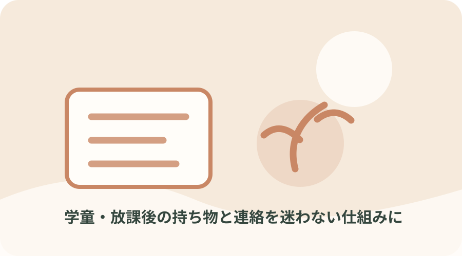
小学生放課後・学童
学童・放課後の持ち物と連絡を迷わない仕組みに
放課後の預け先や習い事がある日は、学校から家までの引き継ぎが複雑になりがち。家族と預け先で同じ連絡方法・持ち物リストを使いましょう。
ガイドを読む →
小学生学校書類
学校プリントを「期限・保管・提出」に分けて管理
提出物が重なると、記入よりも『どこに置いたか』を探す時間が増えます。家庭の書類置き場と、期限を見える化する流れを固定します。
ガイドを読む →
小学生学用品・教育費
入学・進級の出費を、必要品と確認待ちに分ける
学用品、行事費、習い事などは時期が重なることがあります。まず学校からの案内を基準に購入を分け、家計への負担が大きいときは公的な支援も確認します。
ガイドを読む →
家族みんな献立・買い物
献立を毎日ゼロから考えない1週間の買い物メモ
食事づくりの負担は、調理だけでなく献立決めや在庫確認にもあります。完璧な献立表より、主菜の型と買い足し品を決める方法が続けやすいです。
ガイドを読む →
1〜6歳食べむら・好き嫌い
食べむらがある日の食卓：食事の負担を小さくする
食べる量や好みは日によって変わります。食べさせる量を競うより、落ち着いて座れる環境と、家族が続けられる食卓の形を整えます。
ガイドを読む →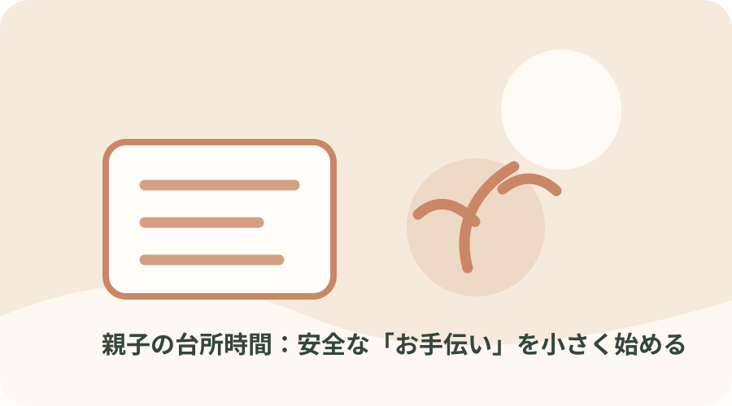
3〜6歳親子で料理
親子の台所時間：安全な「お手伝い」を小さく始める
親子で料理をするときは、包丁や火を使わない作業から。子どもができる役割を一つ決め、大人が安全を見守れる環境を整えます。
ガイドを読む →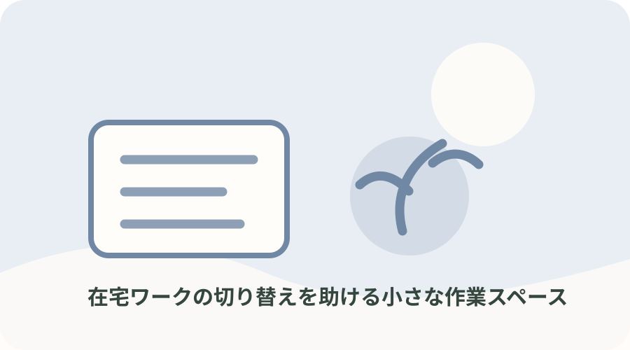
お母さん自身在宅ワーク
在宅ワークの切り替えを助ける小さな作業スペース
家事と仕事の境目が曖昧な日は、作業道具をまとめ、始める・終える合図を作ります。大きな机を買う前に、短時間でも集中できる場所を探します。
ガイドを読む →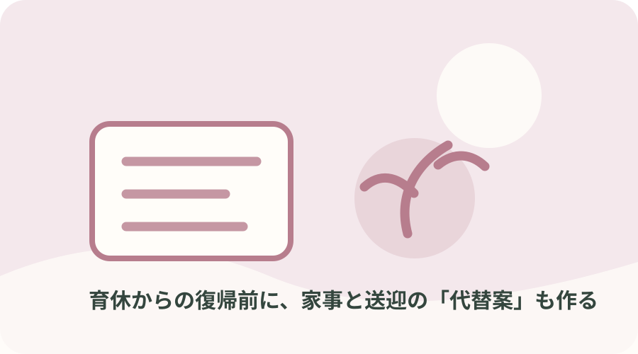
妊娠中・出産後仕事復帰
育休からの復帰前に、家事と送迎の「代替案」も作る
仕事復帰後は、保育時間・通勤・急な休みが同時に動きます。理想の一日だけでなく、遅延や子どもの体調不良時に頼る先を確認しておきます。
ガイドを読む →
家族みんな子どもの急な発熱
子どもの急な発熱に備える連絡・持ち物・仕事の代替案
子どもの体調不良は予定を変えることがあります。医療判断の代わりに、連絡先や受診時に必要な情報をまとめ、家族の連絡・仕事の引き継ぎを準備します。
ガイドを読む →
妊娠中・出産後産後の支援計画
産後の「頼る先」を出産前に3段階で書き出す
産後は体調や睡眠、授乳・家事の負担が家庭ごとに異なります。頼れる人が限られる場合も、家族・地域・専門機関を分けて調べておくと相談の入口ができます。
ガイドを読む →
1〜6歳きょうだい・赤ちゃん
赤ちゃんを迎える上の子の「いつもの時間」を守る
赤ちゃんが生まれると、上の子の生活や大人の関わり方も変わります。特別な準備を増やすより、できる範囲でいつもの時間と安心できる場所を残します。
ガイドを読む →
妊娠中・出産後双子・多胎育児
双子・多胎の準備は「一人ずつ」より生活動線から
多胎育児では授乳・着替え・外出の同時進行が負担になりやすく、必要な道具や支援も家庭・住環境で変わります。先に動線と相談先を確かめます。
ガイドを読む →
3〜12歳気持ちの切り替え
子どもが落ち着く場所は「罰」ではなく休憩場所にする
気持ちが高ぶったとき、子どもを叱って隔離するのではなく、本人が休める選択肢を作ります。困りごとの原因や対応は子どもによって違うため、観察と対話を続けます。
ガイドを読む →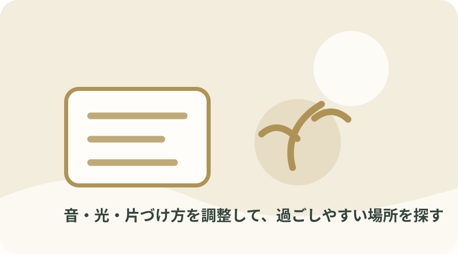
3〜12歳落ち着ける環境
音・光・片づけ方を調整して、過ごしやすい場所を探す
音や光、衣類の感触などで疲れやすい子もいます。原因を決めつけず、どんな場面で困るかを記録し、家庭で変えられる環境から試します。
ガイドを読む →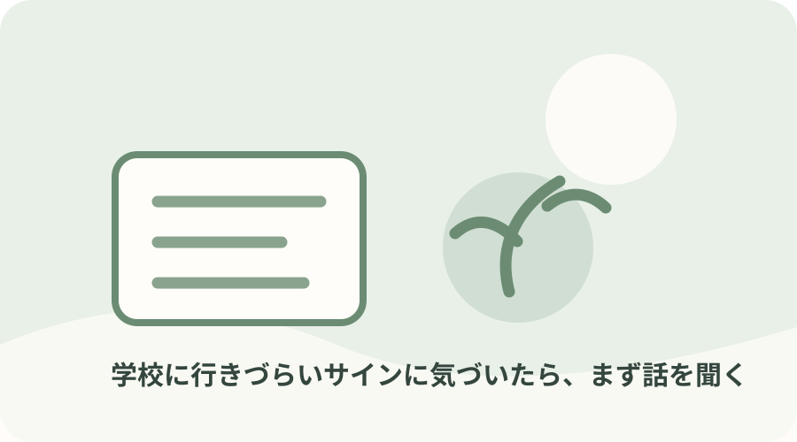
小・中学生学校への不安
学校に行きづらいサインに気づいたら、まず話を聞く
登校しぶりや朝の不調には、体調・友人関係・学習などさまざまな背景があり得ます。原因を急いで決めず、本人の話を聞き、学校と相談先につなげます。
ガイドを読む →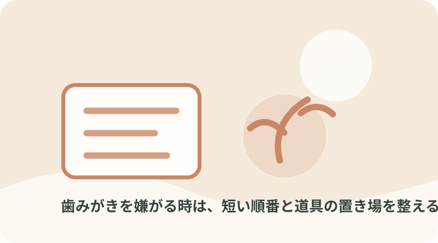
1〜6歳歯みがき習慣
歯みがきを嫌がる時は、短い順番と道具の置き場を整える
毎日の歯みがきは、子どもの様子に合わせて短い見通しを作ります。歯ブラシを持ったまま歩かせず、保護者がそばで見守りましょう。
ガイドを読む →
1〜6歳寝る前の支度
寝る前の支度を短い順番にして、親子の夜を少し軽く
寝かしつけに時間がかかる日は、特別な寝具を増やす前に、照明・入浴・絵本など就寝前の流れを家庭で続けられる範囲に整えます。
ガイドを読む →
小・中・高校生保護者面談
保護者面談で聞きたいことを、短いメモにまとめる
面談の時間は限られるので、心配と質問を整理しておくと話しやすくなります。評価を求めるだけでなく、家庭と学校でできる対応を具体的に確認します。
ガイドを読む →
小・中学生学校タブレット
学校のタブレットを家庭で安全に使う置き場をつくる
学校端末を家に持ち帰る時は、充電・保管・持ち運びの方法を学校の指示に合わせます。家庭の他の端末と区別できる置き場があると確認しやすくなります。
ガイドを読む →
小学生通学・連絡
通学時の連絡ルールを、子どもと保護者で共有する
通学路の安全は用品だけでは確保できません。いつもの道、困った時に立ち寄る場所、家族への連絡方法を、実際の道を歩きながら確認します。
ガイドを読む →家族みんな緊急連絡・防災
家族の連絡先と薬・アレルギー情報を一枚にまとめる
災害時や急な受診に備えて、連絡先や必要な情報を整理します。情報は家族内で共有し、保管場所と更新日を決めておきます。
ガイドを読む →
家族みんな家計・年間予定
教育費や行事費を年間カレンダーに置いて見通しをつくる
入学・進級、行事、習い事などの支出は、月ごとの家計だけでは見えにくいことがあります。年間予定に支出時期を添え、必要な確認を早めます。
ガイドを読む →
3〜12歳きょうだいの部屋づくり
きょうだいの共有スペースは「個人の物」と「共有」を分ける
同じ部屋やリビングを複数の子どもで使う時は、収納を均等に増やすより、自分の物と共有物の境界を作ると片づけの話がしやすくなります。
ガイドを読む →
お母さん自身休息・ひとり時間
休む時間を「余ったら」ではなく短く予定に入れる
育児や家事で自分の時間が取りにくいとき、長い休息を一度に確保するのが難しい場合があります。休息の必要性を家族と共有し、交代の時間を短くても予定に入れます。
ガイドを読む →

家族みんな相談先・孤立
困ったときの相談先を、悩みの種類ごとに控えておく
相談先を一つだけに絞らず、育児・健康・家事支援・学校のように困りごと別に分けると、必要な時に連絡先を探しやすくなります。
ガイドを読む →

家族みんな子どもとキッチン
子どもがいる台所を、片づけやすく安全に整える
台所は熱・刃物・洗剤などが集まる場所です。掃除道具を増やすより、子どもの立ち入り範囲と大人がすぐ片づける場所を決めます。
ガイドを読む →
家族みんな短時間の掃除
15分だけの片づけは「床・机・ゴミ」の一か所から
家全体を一度に掃除しようとすると始めにくくなります。時間を区切り、見える場所を一つだけ整えると、忙しい日の最低限を決めやすくなります。
ガイドを読む →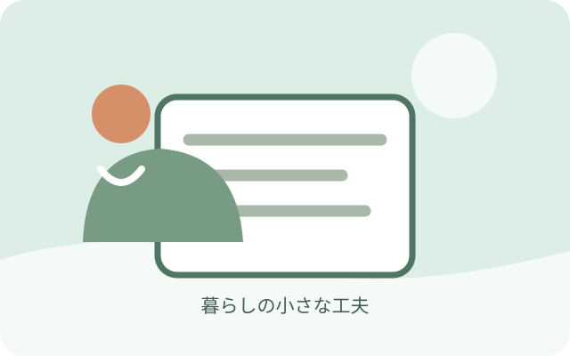
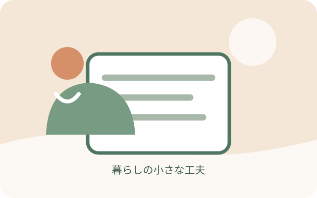
家族みんな掃除道具
床ワイパーを出しっぱなしにして、気づいた汚れをすぐ取る
床掃除の道具をしまい込みすぎると、使うまでの手間が増えます。軽くて置き場所に困らない道具を選び、通り道の小さな汚れを拾います。
ガイドを読む →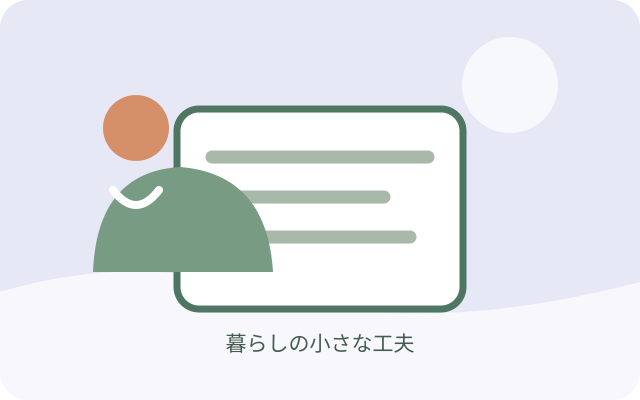
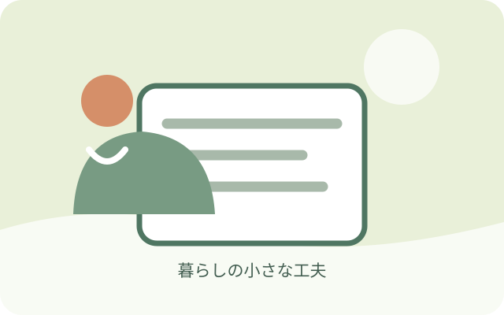
家族みんな掃除道具
ロボット掃除機を買う前に床の段差と片づけ場所を確認
自動掃除機が働きやすい部屋は、床の小物を片づけやすく、段差や配線を把握できている部屋です。購入前に家の条件を確認しましょう。
ガイドを読む →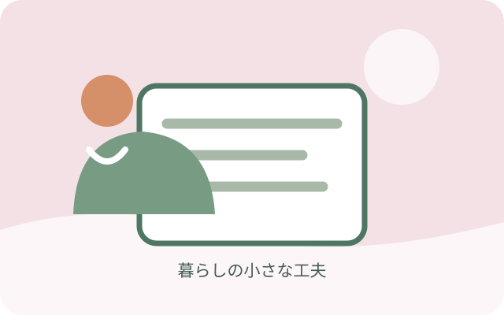


家族みんな家事の時短
エアコンフィルター掃除は取扱説明書の範囲で安全に
フィルターの手入れをしようと思っても、どの部品まで外してよいか分かりにくいもの。機種ごとの説明書を確認して進めます。
ガイドを読む →
家族みんな玄関の泥汚れ
玄関の砂や泥はマットと小さなブラシで持ち込みを減らす
玄関に砂や泥が入りやすい季節は、外で落とす場所、濡れた靴を置く場所、室内を拭く道具を分けると片づけやすくなります。
ガイドを読む →

家族みんな洗濯
洗濯ネットは衣類が中で動きすぎないサイズを選ぶ
ネットに衣類を詰め込みすぎたり、小さすぎる袋に入れたりすると洗いにくくなることがあります。衣類と洗濯機の説明書に合わせます。
ガイドを読む →家族みんな食事・片づけ
ソファの食べこぼしは座面素材を見てから掃除道具を選ぶ
布・合皮・革などソファの素材で手入れ方法が異なります。表面表示を確認し、取り外せるカバーは洗濯表示を優先します。
ガイドを読む →

今日からできる、小さな工夫
暮らしを少し軽くする3つのコツ
全部を一度にやらない
今困っていることを一つだけ選んで、今日できる小さな手順に分けます。
使う場所に、使う物を
家の中の動線に合わせて道具の定位置をつくると、探す時間が減ります。
家族に渡せる形にする
手順や持ち物を見えるところに書いておくと、「お願い」を具体的にしやすくなります。
学齢期のご家庭へ
進学や受験の準備を、もう少し詳しく。
進学対策ガイドでは、中学・高校・大学受験や、英検・漢検などの学習準備をテーマ別にまとめています。お子さんの目標に合わせて、学校や試験の公式情報を確認する入り口としてご利用ください。
進学対策ガイドを見る ↗このサイトについて
「お母さんの参考書」は、暮らしのヒント集です
子どもの成長や家庭の事情に、ひとつだけの正解はありません。各ガイドは一般的な情報と実践のヒントをまとめたもので、医療・育児・学校の個別相談に代わるものではありません。安全や健康に関わる内容は、公的機関の情報を出典として記載しています。学校や園のルール、商品の対象年齢・使い方は最新の案内を必ず確認してください。
テーマの選び方
こども家庭庁の保育所等を対象にした調査では、保育者が保護者から聞く困りごととして、育児の精神的ストレス、頼れる親族がいないこと、仕事と子育ての両立などが報告されています。この調査は保護者全体の割合を示すものではありません。本サイトでは、生活の段取りや使える支援先を確認できる実用テーマに整理しました。
調査資料を確認する（こども家庭庁）広告・アフィリエイトについて
Amazonの商品検索リンクを掲載しています。リンクから購入があった場合、運営者に紹介料が支払われることがあります。各リンクは検索結果を開くもので、個別商品の使用・評価を示すものではありません。Amazonのアソシエイトとして、お母さんの参考書は適格販売により収入を得ています。